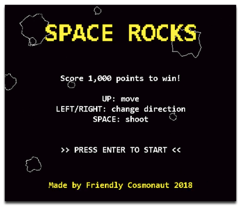
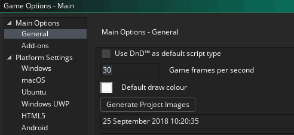

In this chapter, we're going to start building our game, but before we do that, we need to just take a moment to think about what we'll actually need. In general, before starting any project, it's a good idea to plan out what you want to achieve, even if it's in very broad terms, as that gives you something to work towards when you sit down to work.
Our tutorial game is going to be called "Space Rocks", and as mentioned in the introduction, it's going to be a game about shooting asteroids and getting high scores:

What does a game like this need? Let's list the two most basic of the gameplay components:
Now, before continuing, you should make sure that the game is set to run at 60FPS. For that you should open the Game Options now (from the Quick Button at the top of the IDE), and set the Game Frames per Second to 60:

With that done, we can now move on to the next part, which is to create the sprites that the game needs. Click "Next" to continue...